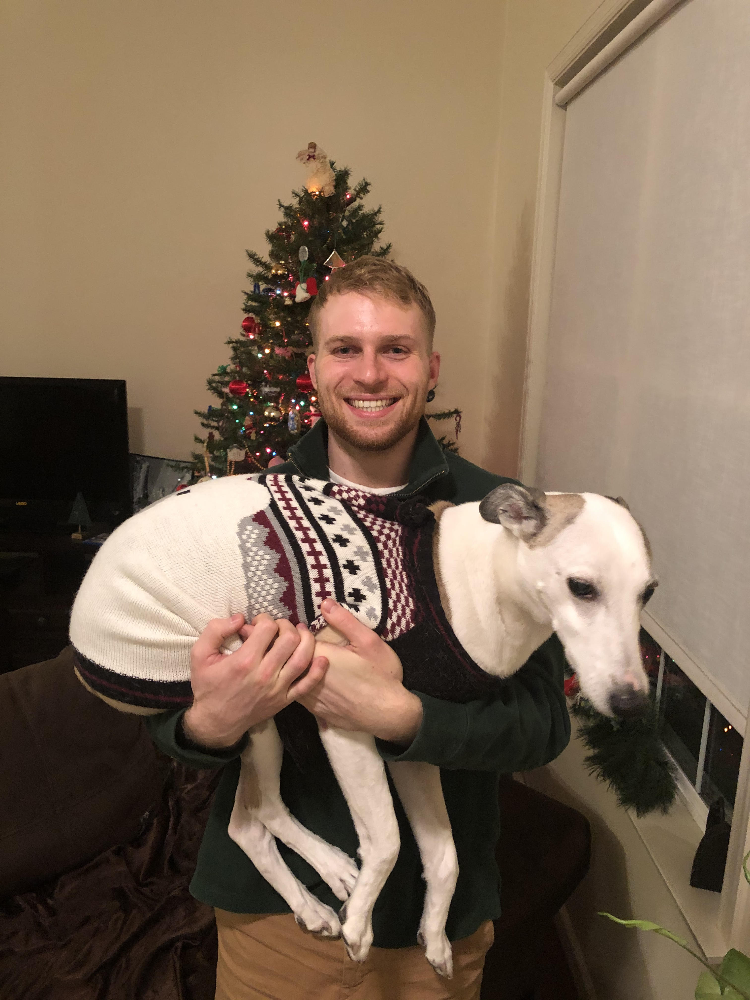

|
 |
Keegan Harriskeegan.harris [at] berkeley.eduGoogle Scholar CV |
I am a postdoc in the EECS department at UC Berkeley, working with Nika Haghtalab and Michael Jordan. I am interested in the mathematical foundations of machine learning, with a particular focus on topics at the intersection of modern AI, algorithmic game theory, and multiagent systems.
I received my PhD in Machine Learning from Carnegie Mellon University, where I was advised by Nina Balcan and Steven Wu. During the PhD, I was supported by the NDSEG Fellowship and was the editor-in-chief of the ML@CMU blog. I also spent two summers at Microsoft Research, working with Alex Slivkins. Before coming to CMU, I studied computer science and physics at Penn State. In the startup world, I have spent time at Lux Capital, US Innovative Technology, and Vitable Health.